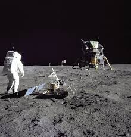
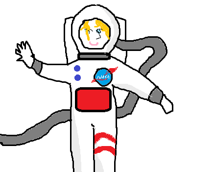
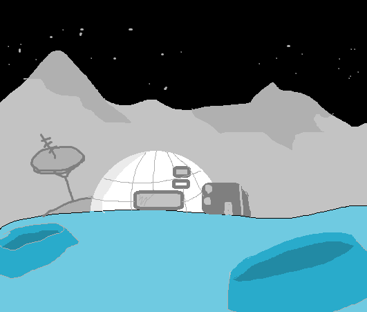

Help me fund my goal - and start my own colony on JUPITER!!

Hello people of the planet erth! My name is Anasthesia Fuchsia Sandhurst-Cresent but I'd like to be called Aimee (most people call me weirdo but that's a DIFFERENT Story!!....) And in this website I would like to ask for your help in FUNDING my super important project - that is the first human colony on the planet Jupiter. And this colony will only be for one person and that is - ME. So is you want to support my goal and help me make my dream come true DONATE MONEY to me please and THANK You!!!

This is what I would look like as an astronaut if You gave me the money to make my dream come true.
Why is the Jupiter project IMPORTANT?
The Jupiter project is vry very very important, so everyone should support it. If you don't support it you are a moron. Sorry... I didn't mean to offend you.. But please please support my goal because up to now only one person gave me money and that is Mr. Cranston who is the gardener at my school and when I told him about my goal he gave me 5 dollars and some candy but it's NOT ENOUGH! so i need MORE MONEY please.
Why life on earth SUCKS =
THE jupiter colony is important because life on earth SUCKS! and Here are all the reasons life on earth SUCKS:
- People are MORONS and they are not nice to me and they don't undersand me. Like in school, where everyone calls me names like Freak or Psycho, and sometimes no one talks to me at all, or sometimes people steal my stuff.
- The place where I live is very noisy and in space there is no noise.
- My Mama is nasty to me and she sometimes hits me and she tells me mean things like that I am ugly and that I make everyones life miserable and that I'm a waste of space.
- And she needs to know where I am all the time and I need to always have a tracking program installed on my phone and she follows me from there (I'm not allowed to go anywhere anyway but that's not the POINT) and if I go to jupiter then she can see that I'm only in one place anyway - the spaceship on Jupiter.
- Earth is going to end anyway in a few years because of air and water pollution and global warming and nuclear wars and over population.
And here is a picture of what the colony on Jupiter is going to look like - (sort of..)

So why do i even want to go to Jupiter and all?
And here are a few good reasons why I want to have a colony on Jupiter:
- I will be on my own on Jupiter and no one else will be there to annoy me or yell at me at all
- And I chose Jupiter because Mr. Elon Musk already wants to build a colony on Mars, and I actually wanted to put my colony on Mars because it's red and I like red but I can't have my colony where Mr. Elom Musk has his colony so I chose my next favourite planet - which is Jupiter. And If Mr. Elon Musk can have a colony in space then so can I.
- Maybe If I go to space everyone will stop thinking that I am a faliure in life and that I'm good-for-nothing like Mama says a lot, bacause I'll be running the colony on Jupiter and I'll be able to do all kinds of experiments for NASA or governments when I'm there. And I think it's an importnant thing to do.
- It is quiet in space like I already SAID and it is not crowded so I will not need to have tantrums any more
- I sometimes likes to imagine that I come from some far away planet, not like Jupiter but much much more far away, and I got sent to earth as part of some secret missin to learn about the human race and one day the aliens that sent me will come and take me back, and if I'm on Jupiter it might be closer for them. And I KNOW it's a crazy idea but it's what's called your IMAGINATION which means it's not real and it's only in your hear so it's ALLOWED. OK.
Here you can donate the money for the mission!!